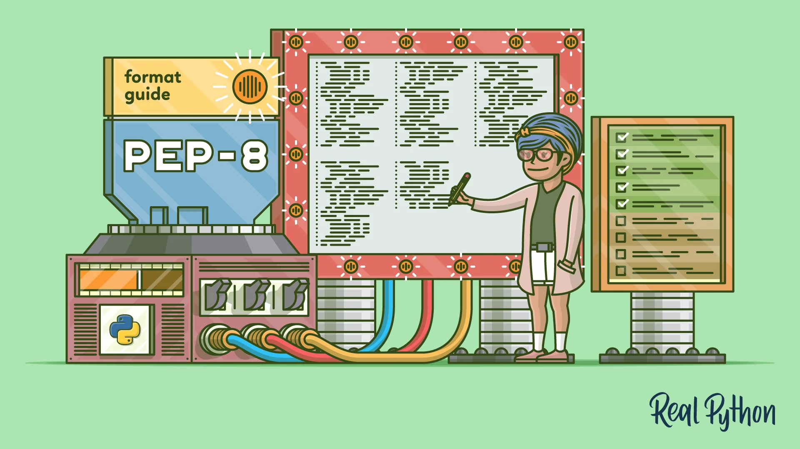
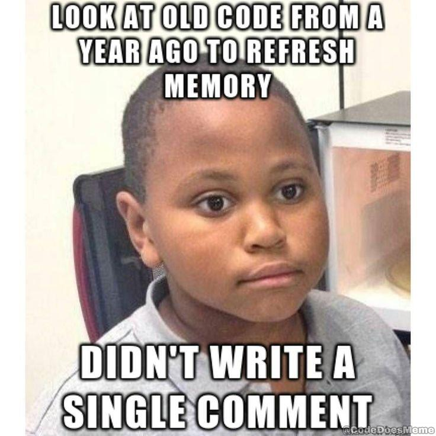
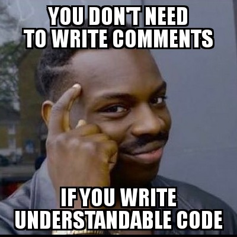
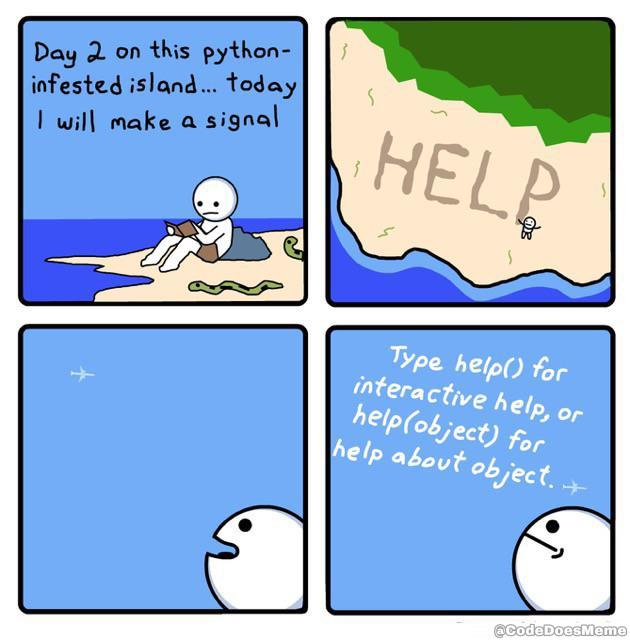
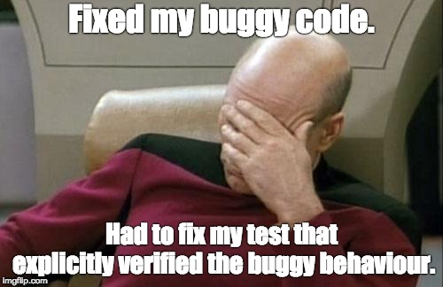

Bonnes pratiques⚓︎

extrait du site https://realpython.com/python-pep8/
1. Conventions syntaxiques⚓︎
La programmation est un art délicat : un simple caractère en trop peut provoquer une erreur pour le code tout entier (penser à un innocent caractère d'espace en début de ligne dans un code Python).

Mais même lorsqu'un code s'exécute sans erreur, il ne faut pas négliger l'aspect purement «esthétique» de celui-ci : il est nécessaire de respecter autant que possible des conventions typographiques, qui vont standardiser le code et le rendre ainsi plus lisible.
Ainsi pour chaque langage, il existe une «bible» de bonnes pratiques de présentation du code, qui visent à l'uniformiser. Pour Python, cette référence s'appelle la Python Enhancement Proposal 8, plus connue sous le nom de PEP8.
En voici quelques extraits :
Les espaces⚓︎
▶ Il faut mettre une espace (oui, en typographie, on dit «une» espace et non pas «un» espace) avant et après chaque opérateur de comparaison, d'affectation, ou mathématique (=, ==, >, +, *, ... )
# PAS BIEN
a=3
# BIEN
a = 3
# PAS BIEN
if x>3:
print("ok")
# BIEN
if x > 3:
print("ok")
▶ Pour les opérateurs mathématiques, on essaie de reconstituer les groupes de priorité (lorsqu'il y en a) :
# PAS BIEN
x = 3*2
# BIEN
x = 3 * 2
mais
# PAS BIEN
x = 3 * 2 + 5
# BIEN
x = 3*2 + 5
▶ On ne met pas d'espace à intérieur des parenthèses, des crochets ou des accolades :
# PAS BIEN
for x in range( 5 ):
print( 'bonjour' )
# BIEN
for x in range(5):
print('bonjour')
▶ Pour les virgules, et les deux points : pas d'espace avant mais une espace après.
# PAS BIEN
if color == (0,255,0) :
print('vert')
# BIEN
if color == (0, 255, 0):
print('vert')
On peut contrôler si son code vérifie les standards de la PEP8 sur ce site http://pep8online.com/
Les conventions de nommage⚓︎
▶ Les variables à une lettre (comme i, j, k ) sont réservées aux indices (notamment dans les boucles).
▶ Les autres variables doivent avoir des noms explicites, éventuellement écrits en snake_case si plusieurs mots doivent être reliés.
# PAS BIEN
if d == 1:
cep += vm
# BIEN
if date == 1:
compte_epargne += versement_mensuel
Rappel des différents types de casse :
snake_case: les mots sont séparés par des underscores. Conseillé en Python.camelCase: les mots sont séparés par des majuscules mais la 1ère lettre est minuscule. Conseillé en Javascript.PascalCase: les mots sont séparés par des majuscules et la 1ère lettre est majuscule. Conseillé en C.kebab-case: les mots sont séparés par des tirets courts. Conseillé en HTML - CSS.
▶ Cas particulier des classes en Programmation Orientée Objet : leur nom doit commencer par une majuscule.
# PAS BIEN
class voiture:
def __init__(self, annee, marque, modele):
#pass
# BIEN
class Voiture:
def __init__(self, annee, marque, modele):
#pass
2. Commentaires et docstrings⚓︎
2.1 Commenter son code ? (ou pas)⚓︎

La nécessité de commenter son code est assez controversée.
Il est d'usage de dire qu'un code doit être assez explicite pour que le lecteur puisse le comprendre sans avoir à lire un commentaire.
De fait, les commentaires sont parfois (souvent) superflus :

Et s'ils sont réellement nécessaires, il faut se poser la question : est-ce que ce code n'aurait pas pu être plus simple ? (attention, la réponse n'est pas toujours oui)

Exemple :
Considérons la fonction suivante.
def f(c, t, n):
# c est le capital de départ, t le taux annuel et n le nombre d'années
return c * (1 + t)**n #renvoie le capital après n années
f() ailleurs dans le code, se souviendra-t-on de son rôle ?
Il aurait mieux valu écrire :
def capital_apres_n_annees(capital, taux, nombre_annees) :
return capital * (1 + taux)**nombre_annees
2.2 Le cas particulier des docstrings⚓︎
2.2.1 Que sont les docstrings?⚓︎
Les docstrings sont des commentaires normalisés pour les fonctions, qui peuvent être consultés en console.
Exemples :
Nous connaissons la fonction len() qui permet par exemple de connaître la longueur d'une liste passée en paramètre.
Si nous tapons en console la commande print(len.__doc__), nous aurons la description de cette fonction.
>>> len.__doc__
'Return the number of items in a container.'
f par la commande help(f) :
>>> help(len)
Help on built-in function len in module builtins:
len(obj, /)
Return the number of items in a container.

De même pour la fonction range :
>>> print(range.__doc__)
range(stop) -> range object
range(start, stop[, step]) -> range object
Return an object that produces a sequence of integers from start (inclusive)
to stop (exclusive) by step. range(i, j) produces i, i+1, i+2, ..., j-1.
start defaults to 0, and stop is omitted! range(4) produces 0, 1, 2, 3.
These are exactly the valid indices for a list of 4 elements.
When step is given, it specifies the increment (or decrement).
Le résultat de la commande help(range) est trop long pour être repris ici, mais on y retrouve bien la docstring de la fonction range.
2.2.2 Créer ses propres docstrings⚓︎
Il suffit pour cela de commencer la fonction à documenter par une ou plusieurs phrases entre triples quotes :
def capital_apres_n_annees(capital, taux, nombre_annees) :
"""
Renvoie le capital après n années.
capital : valeur initiale
taux : taux d'intérêt exprimé en nombre décimal (ex: 0.02 pour un taux de 2 %)
nombre_annees : nombre d'années de placement du capital
"""
return capital * (1 + taux)**nombre_annees
>>> help(capital_apres_n_annees)
Help on function capital_apres_n_annees in module __main__:
capital_apres_n_annees(capital, taux, nombre_annees)
Renvoie le capital après n années.
capital : valeur initiale
taux : taux d'intérêt exprimé en nombre décimal (ex: 0.02 pour un taux de 2 %)
nombre_annees : nombre d'années de placement du capital
Comme on le voit, tout cela est très «verbeux». Cela peut nous paraître largement superflu puisque nos codes dépassent rarement quelques dizaines de lignes et sont lus par rarement plus de 2 personnes. Mais dans la vraie vie des développeurs, il est primordial qu'un code soit clair et documenté.
3. La programmation défensive : des assert pour sécuriser le code⚓︎
La programmation défensive est l'art de prévoir le pire et d'essayer de le détecter avant qu'il ne soit trop tard.
De manière bien plus concrète, il est d'usage d'essayer de répérer si des données (souvent des paramètres d'une fonction) sont susceptibles de créer des problèmes, ou sont hors spécification.
Un exemple :
La fonction :
def racine_carree(x):
assert x >= 0, 'un nombre positif ou nul est requis'
return x ** 0.5
racine_carree(-2), le message suivant :
>>> racine_carree(-2)
Traceback (most recent call last):
File "<pyshell>", line 1, in <module>
File "/home/gilles/Bureau/exemples_assert.py", line 2, in racine_carree
assert x >= 0, 'un nombre positif ou nul est requis'
AssertionError: un nombre positif ou nul est requis
Un autre exemple :
def moyenne_trimestrielle(liste_notes):
"""
calcule la moyenne des nombres de la liste liste_notes
"""
assert liste_notes != [] , 'liste vide'
assert max(liste_notes) <= 20, 'au moins une note dépasse 20'
assert min(liste_notes) >=0, 'au moins une note est en dessous de 0'
return sum(liste_notes) / len(liste_notes)
À ce stade, les assert sont donc pour nous juste un moyen rapide de remplacer un test if ... then ... else pour détecter des erreurs potentielles.
Ils sont en réalité plus utiles que cela : lors de la conception d'un programme, des assert sont posés pour vérifier l'intégrité du code, mais peuvent être désactivés à tout moment pour en faire un code optimisé (par la commande -O à l'exécution). Tout ceci dépasse largement le cadre de notre cours.
Il est à noter aussi que les erreurs peuvent être gérées par le mécanisme try ... except, qui permet de «lever des exceptions». Pour les curieux, plus de renseignements ici.
4. Les tests⚓︎
4.1 Pourquoi des tests ?⚓︎

Tester une fonction est la première chose que l'on fait (normalement...) lorsqu'on vient de finir de l'écrire.
Par exemple, si on vient de construire la fonction valeur_absolue(n), il est fort probable qu'on aille taper ceci dans la console :
>>> valeur_absolue(-3)
3
>>> valeur_absolue(0)
0
>>> valeur_absolue(7)
7
- On peut regrouper tous ces tests au sein d'une même fonction
test_valeur_absolue(). - On peut écrire cette fonction
test_valeur_absolue()avant même de commencer à écrire la fonctionvaleur_absolue(n).
Remarque : la méthode de développement logiciel TDD (Test Driven Developement) est basée en partie sur ce principe :
- On commence par écrire le test de la fonction.
- Le test échoue (forcément, la fonction n'est pas encore codée !)
- On écrit le code de la fonction pour que le test soit validé.
- On améliore (si possible) ce code tout en vérifiant que le test continue à être valide.

Revenons à nos tests sur la fonction valeur_absolue(n)
def test_valeur_absolue():
if valeur_absolue(-3) == 3 :
print("ok")
else:
print("erreur")
if valeur_absolue(0) == 0 :
print("ok")
else:
print("erreur")
if valeur_absolue(7) == 7 :
print("ok")
else:
print("erreur")
En console, il suffit maintenant d'appeler la fonction test_valeur_absolue() :
>>> test_valeur_absolue()
ok
ok
ok
4.2 Revoilà les assert⚓︎
Utiliser des assert permet d'écrire très simplement les tests précédents.
Reprenons notre fonction valeur_absolue(). Sa fonction test test_valeur_absolue() peut s'écrire :
def test_valeur_absolue():
assert valeur_absolue(-3) == 3
assert valeur_absolue(0) == 0
assert valeur_absolue(7) == 7
Exercice :
Écrire une fonction maxi(liste) qui renvoie le plus grand élément de la liste liste passée en paramètre (de préférence sans utiliser la fonction max() ...).
Vous écrirez d'abord une fonction test_maxi() avant d'écrire la fonction maxi(liste)
4.3 Le module doctest⚓︎
Le module doctest permet d'écrire les tests à l'intérieur de la docstring d'une fonction.
Considérons une fonction dont le but est de compter les voyelles du mot passé en paramètre.
def compte_voyelles(mot):
"""
renvoie le nombre de voyelles du mot donné en paramètre.
>>> compte_voyelles("python")
2
>>> compte_voyelles("HTTP")
0
>>> compte_voyelles("eau")
3
"""
voyelles = "aeiou"
total = 0
for lettre in mot:
if lettre in voyelles:
total += 1
return total
Observez bien la docstring : elle contient explicitement ce qu'on veut que renvoie le terminal lorsqu'on appellera la fonction.
On écrit donc les trois chevrons >>> suivi de l'appel à la fonction, et à la ligne en dessous ce que nous espérons que la fonction nous renvoie.
On peut écrire autant de tests que l'on veut.
Ensuite, en console :
>>> import doctest
>>> doctest.testmod()
>>> import doctest
>>> doctest.testmod()
**********************************************************************
File "voyelles.py", line 4, in __main__.compte_voyelles
Failed example:
compte_voyelles("python")
Expected:
2
Got:
1
**********************************************************************
1 items had failures:
1 of 3 in __main__.compte_voyelles
***Test Failed*** 1 failures.
TestResults(failed=1, attempted=3)
On voit que le test compte_voyelles("python") a renvoyé la valeur 1 alors qu'on attendait 2. En regardant notre fonction, on s'aperçoit donc qu'on avait oublié le y dans la liste des voyelles.
En corrigeant ceci, le test devient :
>>> import doctest
>>> doctest.testmod()
TestResults(failed=0, attempted=3)
4.3 À propos des tests⚓︎
Le comportement face aux tests en programmation doit être le même qu'en mathématiques : un test qui ne marche pas est plus riche d'enseignements qu'un test qui marche.
En mathématiques, seule la notion de contre-exemple est fertile : si quelqu'un vous affirme que «tous les nombres impairs sont premiers», il vous suffit d'exhiber le nombre 9 pour lui prouver qu'il a tort et achever la discussion.
Par contre, il aurait pu essayer de vous convaincre avec les nombres 3, 5 et 13, qui sont bien impairs et premiers.
De la même manière, voir qu'une fonction passe les tests que vous avez écrits ne vous assurera pas que cette fonction aura toujours le bon comportement souhaité. Elle l'aura pour les valeurs de test, mais pas forcément pour les autres.
En revanche, si une fonction ne passe pas un des tests, vous avez la certitude qu'il y a un problème à régler quelque part.
Tout ceci en admettant, bien sûr, que vos tests eux-mêmes ne comportent pas d'erreurs...
